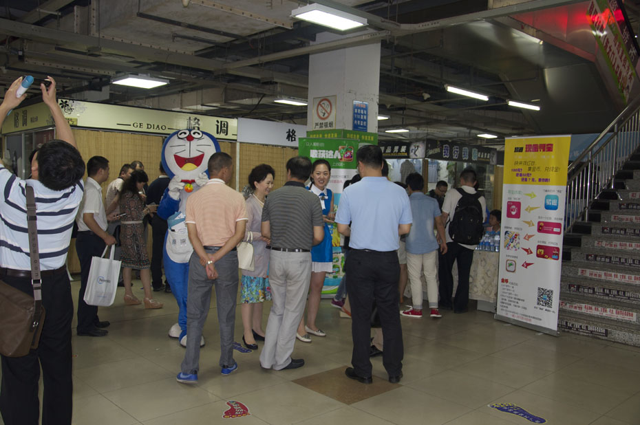
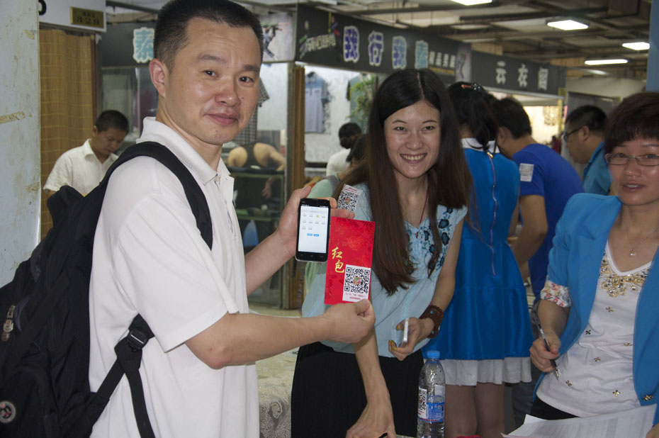

中国半导体照明网报道-室内定位，从一盏LED开始
摘要：当越来越多的SHOPPINGMALL超过10万平米时，当越来越多的大型室内空间都面临着空间大而监控不足的情况时，当曾经我们辅以重任的WIFI、蓝牙等传输的室内定位系统频频出现较大误差时，人们开始寻求更加合理，更顺应未来发展趋势的室内定位技术。
当越来越多的SHOPPINGMALL超过10万平米时，当越来越多的大型室内空间都面临着空间大而监控不足的情况时，当曾经我们辅以重任的WIFI、蓝牙等传输的室内定位系统频频出现较大误差时，人们开始寻求更加合理，更顺应未来发展趋势的室内定位技术。
LED灯的快速普及令可见光通信技术(LED白光通信技术)成为了最新最具期待的室内定位技术，解决了曾经困扰所有室内定位技术定位精度超过5米的难题，首次将定位精度限定在1米!
无论是国外还是国内的技术先锋们，都聚焦于LED白光室内定位技术，但唯有我国率先完成了从技术到商业化的过程。

室内定位技术的精度之殇
早在2011年，谷歌手机地图6.0版发布时已经在一些地区加入了室内导航功能，此方案主要依靠GPS(室内一般也能搜索到2～3颗卫星)、wifi信号、手机基站以及根据一些“盲点”(室内无GPS、wifi或基站信号的地方)的具体位置完成室内的定位。
虽然当时这个方案并不够完善，无论是定位精度还是信号稳定度而言都存在较明显的缺陷，因此谷歌的这款手机地图更多是概念上的创新，就技术可操作性而言并不具有普遍性。但依然在当时引起了轰动，人们从中感受到了室内定位技术的突破性进展。
苹果公司2013年9月份在新发布的移动设备上增设了一款名为iBeacon的技术功能，引起了果粉们的疯狂追捧。
果粉们虽然买账，但该技术主要是通过蓝牙技术来实现室内定位，在科研人员看来，这并不是一个精准度最高，也不是一个信号最为稳定的室内定位技术。
因为无论是GPS还是WIFI，抑或是蓝牙，技术的缺陷尤其在精准度上是非常明显的。GPS的定位精度在10～100米，且还得受环境影响，需要多点定位和数据匹配才能完成，反应速度也相对慢一些。目前虽然是WIFI和蓝牙的技术相对成熟，但通过依赖手机、WiFi无线网的无线信号在空气中衰减的原理，通过测量无线信号的强度，计算衰减的距离来决定室内位置。但是，由于无线信号在空气中衰减受建筑内环境影响很大，所以定位非常不精确。但依然没有办法将定位的精度小于5米，且对室内空间的楼层识别度不高，信号稳定性和信息传输的保密性也难以保证。
尽管很多国际大学、科研院所及谷歌、诺基亚、摩托罗拉、微软等商界大佬进行了很多研究，但一直无法超越理论障碍。在室外无所不能的传统导航面对“最后一公里导航”的室内定位时却有着无法逾越的尺度与精度之殇。
LED的室内定位技术之光
不过，早在21世纪初期，多个国家的技术专家看到了另一种可能性，一种环保、节能的照明新材料--LED，技术专家们在荧光灯或发光二极管等发出的肉眼看不到的高速明暗闪烁信号不仅可以用来传输信息，且如果能够定位的话，定位精准度可以达到1米!
这完全颠覆了人们对于普通照明的认识，于是，全球的专家们都在研究如何利用LED里的白光从信息传输到信息接收的循环。最终，人们从智能手机里发现了玄机。
“智能手机的摄像头可以用于作为接收信息的终端。”国内首家拥有LED白光室内定位技术自主产权并实现商业化运作的公司华策光通信科技有限公司运营副总唐海军介绍称，这一项技术不仅仅是智能照明的革命，更是解决了室内定位历史上的精准难题。
该技术的原理是将需要传输的信息编译成一段调制信号，用脉宽调制的方法附加到LED灯具的驱动电流上，利用户内无处不在的光源作为发射载体，当用户进入灯具照明区域，以不增加任何硬件的智能手机接收并识别光信号，解析出灯具发送的唯一身份识别信息。利用所获取的身份识别信息在地图数据库中确定对应位置信息，完成定位。
在技术专家们看来，该技术几乎解决了此前所有室内定位技术存在的缺陷：定位精度达到1米，信号稳定，信息保密性高，不受环境影响……
于是，全球的技术研发专家们都将目光瞄准了可见光通信技术。无论是日本、韩国、美国还是中国，都致力于该技术的实际运用功能研发中。
美国一家成立2011年的公司Bytelight是该领域内受关注最多的公司，从最初的研发阶段到融资的完成，该公司即将和照明厂家合作，进入实际的生产阶段。
相对于此，中国的步伐迈得更快些。华策光通信科技有限公司，作为和国家半导体照明创新实验室合作的项目，自主研发出来基于LED白光定位技术的U-beacon室内定位系统，使用CMOS摄像头进行可见光信号接收，不同于使用感光二极管接收可见光，弥补了其它国家在可见光信号接收方面易受周边其它光源干扰的不足。且在今年中旬实现了商业化运营，推出了全球首个具有3D360实景地图的应用APP--易逛，并已经在江苏常州市开始了试运营。

当然，还有技术人员从中看到了另外一种可能性：上网。复旦大学根据该技术研制出来光定位系统下的上网技术，但这仅仅是概念性的技术，因硬件和环境的影响，还只能在较小的范围内实现。
可见光通信的多维度应用前景
这仅仅是初始阶段。对于WIFI和蓝牙定位，使用可见光来进行定位，不但初始安装费用低，而且不需要像WIFI和蓝牙那样重新扫描信号强度，后期维护成本也低，加上定位精度的优势，人们对于可见光通信的未来更加看好。不仅仅是技术上的提升，更多是应用层面的多维度呈现。
报告显示，截至2014年1月，我国移动互联网用户总数达8.38亿户，在移动电话用户中的渗透率达67.8%;手机网民规模达5亿，占总网民数的八成多，手机保持第一大上网终端地位。我国移动互联网发展进入全民时代。
同时，在我国，LED已经成为未来照明的发展趋势，根据调研统计显示，很多公司的高管和产业专家都认为2013-2015年将是LED照明普及率快速增长期，2015年国内LED普及率将高达50%。
“目前广大商业场所正在进行LED光源替换，U-beacon技术旨在现有光源上增加一个低成本原件，可以随LED替换浪潮一起进行推广。”我公司副总经理唐海军先生认为，在商业化运作方面，可见光通信技术的作用更加明显，且该技术与智能手机和网络的结合，并通过室内3D360实景地图的全景呈现，将为未来实体商业的O2O平台的搭建提供显著助力。因此，他们正在谋求全国范围内一二线城市商业项目的合作。
LED灯具和智能手机，这是实现可见光通信的两大硬件，硬件上的大规模普及在一定程度上给了LED室内定位技术智能化发展的更多可能性。在专业的技术人员和运营专家们看来，该技术的运用不仅仅在商业领域里，还将呈现于多个行业内，其未来的发展有着不可忽视的前景。
目前已见雏形的是矿井下定位系统和特种行业内的定位系统。这两个系统都可以通过光定位的精准、稳定和便利性，实时确认相关的位置信息，做好安全管控和灾难预警，同时还可以因光定位的传输的一对一的保密性，用于特种行业内的信息传输等。
当然，更大胆的想象是，或许有一天，这种光定位技术的运用不仅仅是限于室内空间，在LED普及率极高的情况下，甚至可以用于一定的室外环境。
也许，不仅仅是如今深度依赖的WIFI，甚至户外的各种LED显示屏都能实现其智能化应用。